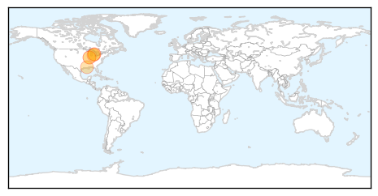

30 Day Trends
Web: 7 alerts, 3 warnings
Twitter: 2 alerts, 0 warnings
Top Articles:
- 0.995
- Mosquitos in Cook County Test Positive for West Nile Virus
- 0.980
- West Nile confirmed in Terrebonne
- 0.947
- First West Nile virus activity of 2015 detected in Michigan
- 0.821
- 1st West Nile virus activity detected in Michigan
- 0.752
- Be On Guard as Michigan Records the First West Nile Virus Of 2015
- 0.541
- Will, Grundy counties combat mosquito population
Top Tweets:
-
No tweets found for Jun 13, 2015
Web/News Articles
Tweets

Article Locations
Article Confidences